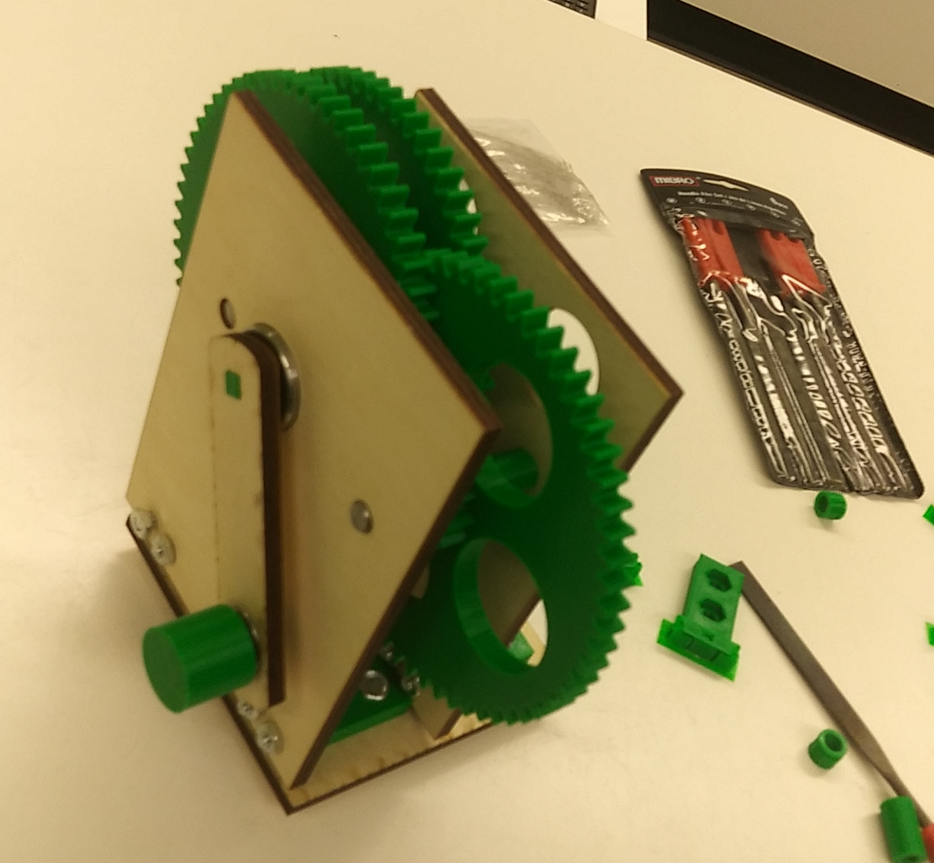
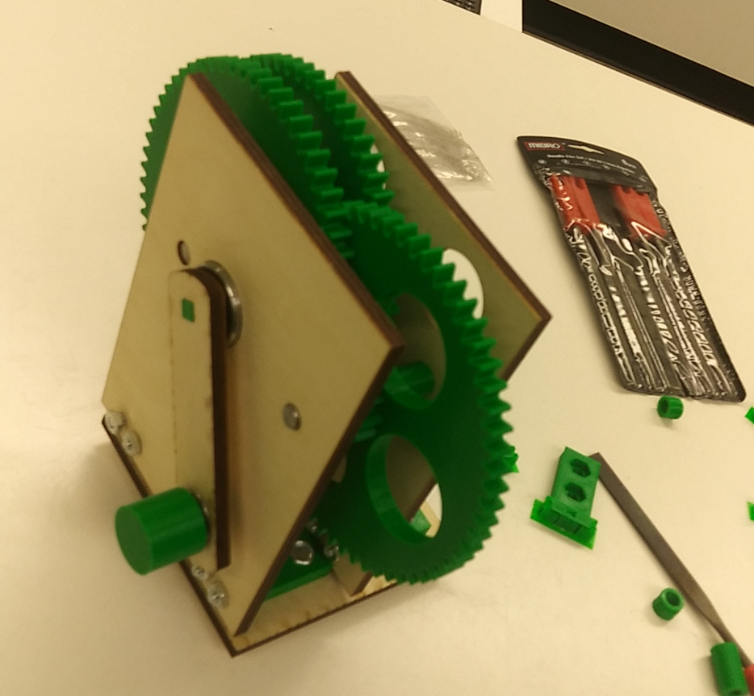

Arduino
Game & Watch-type game
Arduino projects are some of my favorites, because they let me combine my interests in software and hardware development.
The GIF to the right presents a game that I have made where the player sorts alphabetically a randomly generated array of numbers using a controller made from repurposed keyboard switches (from the keyboard I am playing with in the header).
In the next projects I have made an infinitely looping animation for VGA monitors and a device that plays a sound from an SD card when a switch is opened.


Audio message player using an SD card reader, a small speaker and a switch

Java + Android
Arithmetic practice Android app developped in Java using Android Studio
I have learned Java in one of my first year university courses. Being an android user and knowing that android apps run on the JVM, I wanted to apply the theoretical knowledge from this course for a project. I therefore decided to make an app inspired by Texas Instruments' Little Professor toy.
With the help of an online course, I easily translated that knowledge to real-life use.

Python
Series of python programs made to edit a video compilation of all #1 songs on the canadian charts in a given decade. The data of what songs were #1 during what time was scraped off of wikipedia using
pandasto then be searched and downloaded from Youtube using google cloud's Youtube Data API v3 and
pytube. The final video was then created by editing 10 second clips from each video and adding text showing info about the song with
moviepy.
3D
Various 3D modeling projects done in Fusion 360 and onshape.


 

Old Apple computer mouse converted to optical and USB to be used on modern computers using the internals of a modern mouse.